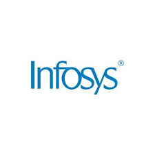

Infosys was established in 1981 in Pune,Maharashtra.It is a service-based IT company and is the second largest IT company of India.Its founders are Nandan Nilekani,N.R.Narayan Murthy,Ashok Arora,S.Gopalkrishnan, K.Dinesh and N.S.Raghavan.They worked at TCS before starting Infosys.
Infosys has a market capitalisation of $35B.It ranks fifth in India in terms of market capitalisation. It has a revenue of $13B and net income of $2.3B.About 60.7% revenue of India comes from North America, 24.3%from Europe,3% from India and 12% from other countries.
The headquarters of Infosys are situated in Bangalore,Karnataka.It has over 191 offices in 46 nations.
There are more than 250000 people working for Infosys.Nandan Nilekani is the Chairman of Infosys and Salil Parekh is the MD and CEO of Infosys.
The share price of Infosys is Rs.1112.
